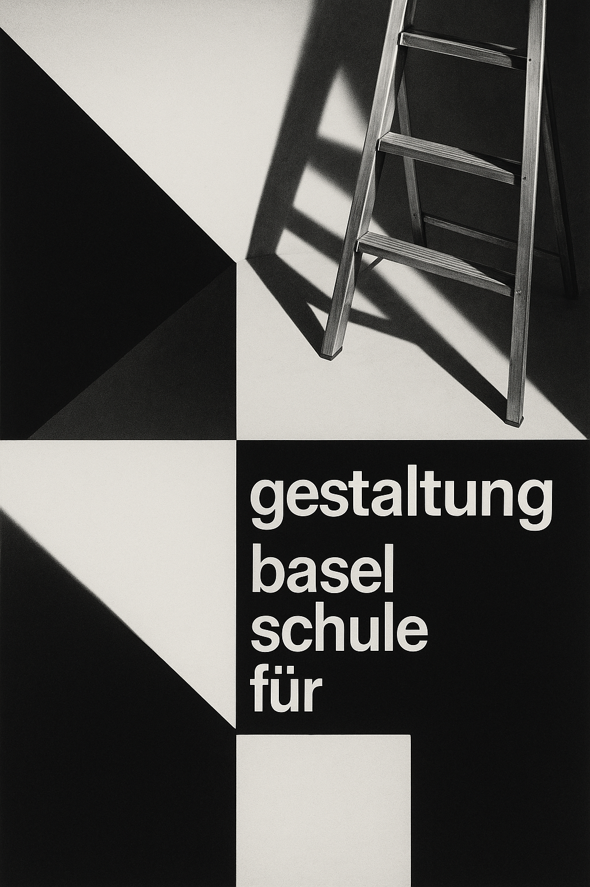
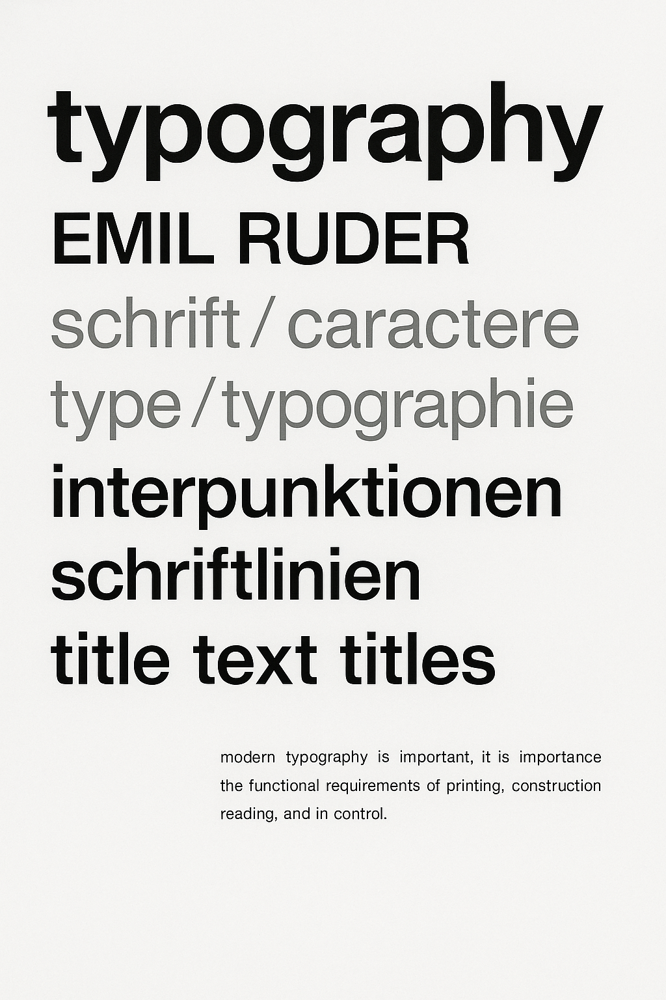

International
Typographic
Style
Also known as the Swiss Style, this graphic design movement emerged in Russia, the Netherlands, and Germany in the 1920s and was further developed by designers in Switzerland during the 1950s.
Principles
Cleanliness. Readability. Objectivity. The style emphasizes the use of a mathematical grid to structure information.
Typography
The use of sans-serif typefaces like Akzidenz-Grotesk and Helvetica is a hallmark. Text is often flush-left, ragged-right.

Josef Müller-Brockmann, 1955

Armin Hofmann, 1959

Emil Ruder, 1960